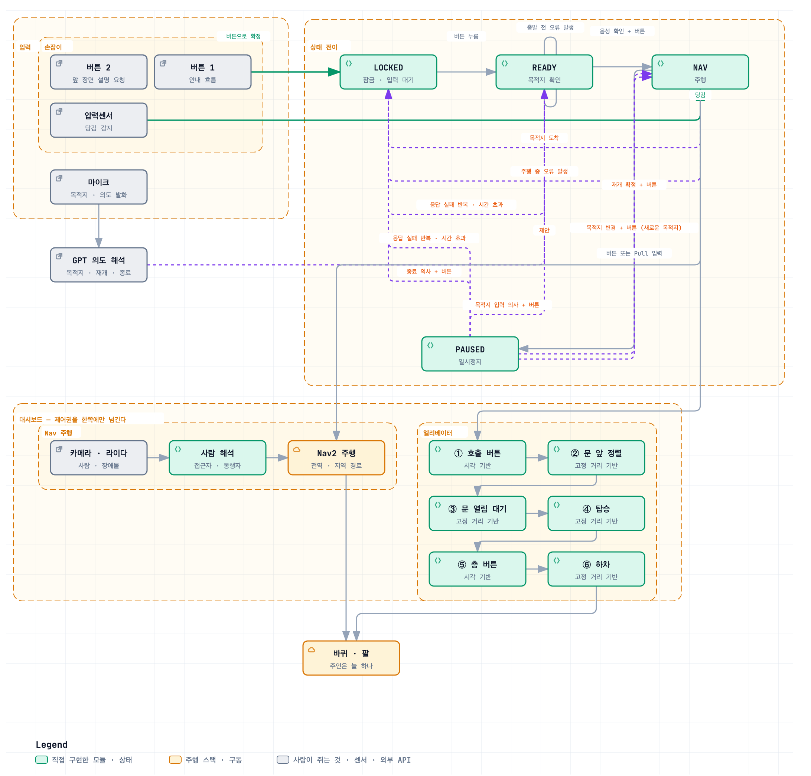
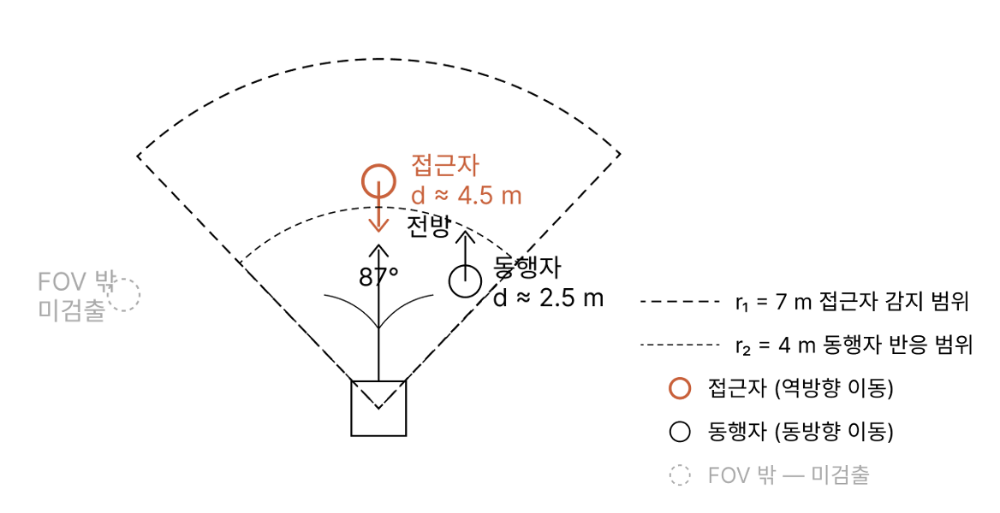
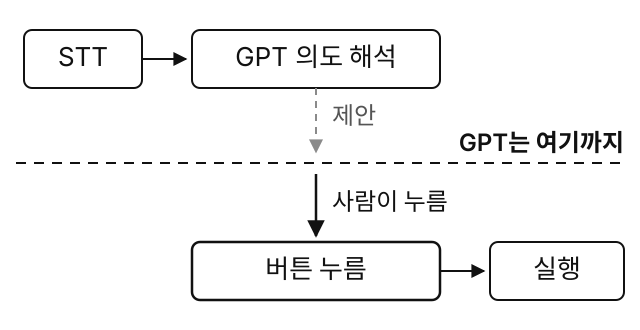

SoNA (Social Norm-Aware Indoor Navigation Assistant)
사회적 규범 인식 기반 실내 자율 안내 로봇 시스템
Impact
- 4개의 상태LOCKED, READY, NAV, PAUSED네 상태를 버튼과 음성으로만
- 사회적 규범사람의 방향을 탐지해 양보 및 추적엘리베이터 1층→5층 이동
- 결함 관리직접 기록한 결함 239건사용자 입장에서 해결
- 당사자 인터뷰요구 3건 전부 반영밀기 기능은 제거 희망
Background
ITRC 과제로 만든 사회적 규범 인식 기반 실내 자율 안내 로봇 시스템입니다.
시각장애인 사용자가 손잡이를 잡고 로봇을 따라 걸으면 목적지까지 데려다줍니다.
이전에도 시각장애인용 안내 로봇은 있었지만,
엘리베이터 버튼을 직접 누르는 것과 사회적 규범 인식(주변 사람을 추적해 피하거나 따라가는 것)은 구현되지 않았습니다.

당사자 인터뷰를 통해 기능을 구체화했습니다.
- 마주 오는 사람은 방향을 보고 피하고, 같은 방향으로 가는 사람은 따라갈 것
- 엘리베이터는 스스로 타고 층을 넘을 것
- 사람과 부딪히는 일이 없어야 하고, 움직이기 전에 사용자의 결정을 따를 것
상용 제품(Hello Robot Stretch SE3) 위에 손잡이를 제작해 장착하고, 주행·사람 추적·음성·엘리베이터 기능과 이것들을 묶는 상태 기계를 구현한 시스템입니다.
Architecture

Contributions
손잡이 — 버튼 둘과 압력센서
Autodesk Fusion으로 설계해 3D 출력합니다.
버튼 2개와 압력센서를 아두이노로 읽습니다.
- 버튼 하나는 주변 환경을 분석해 들려줌
- 다른 버튼은 GPTPlanner가 해석한 의도를 수락
- 압력센서를 당기면 어떤 상태에 있든 PAUSED로 전환

OCR-RCNN으로 층 버튼 인식과 가압
승강기는 제조사와 연식마다 제어 방식이 달라 연동에 쓸 수 있는 표준이 없습니다.
OCR-RCNN으로 그리퍼 카메라 영상에서 버튼을 인식해 직접 누릅니다.
- 호출 버튼을 누르고 탑승한 뒤, 캐빈 안에서 목표 층 버튼을 누름
- 글자를 못 읽은 버튼은 배치로 추정
- 층이 바뀌면 지도를 교체

사용자를 포함한 로봇 크기
손잡이를 쥐고 선 사용자까지 포함해 로봇 크기를 뒤로 확장하고 Nav2에 적용했습니다.
사람 인식 기반 경로 수정
로봇이 향한 방향과 사람의 이동 방향을 비교해 주행합니다.
- 접근자 — 마주 오는 사람. Nav2 원칙으로 회피
- 동행자 — 같은 방향으로 가는 사람. 그 진행 방향을 경로에 40%만큼 반영

음성 해석과 실행 사이 물리 버튼
GPT는 말을 의도로 바꾸는 데까지만 사용합니다.
- 해석한 결과를 음성으로 들려주고, 손잡이 버튼을 눌러야 실행

장애물 밀기 — 구현 후 폐기
경로 위의 물체가 밀 수 있는 것인지 종류로 판단해 밀고 지나가는 기능을 만들었습니다.
당사자 인터뷰에서 원하지 않는다는 답을 듣고 폐기했습니다.
1층에서 5층까지
단국대학교 2공학관 1층에서 504호까지 주행을 완료했습니다.
- 목적지 선택 · 승차지점 주행 · 엘리베이터 시퀀스 · 지도 전환 · 5층 목적지 주행 · 도착 안내
ITRC 인재양성대전 부스 시연
코엑스에서 열린 ITRC 인재양성대전에서 부스를 열고 시연했습니다.
관람객이 직접 체험하게 했고, 화면에 지도와 주행 로그를 함께 띄웠습니다.

Troubleshooting
버튼을 찾아도 팔이 닿지 않음
- 문제
- OCR-RCNN으로 인식했으나 아래쪽 층 버튼만 실패.
- 원인
- 빛 반사로 인식이 흔들림. 팔이 좌우로 못 움직여 닿는 자리가 선분 하나. 화면 좌표만으로는 선 밖인지 판단 불가.

- 해결
- 각도와 거리를 달리해 찍은 사진 여러 장과 카메라 파라미터로 버튼의 3차원 좌표 복원.
- 결과
- 조건이 다른 세 측정이 오차 4.8 mm 일치. 못 닿으면 베이스 14.7 cm 이동으로 계산.
하드코딩한 이동 거리가 미끄러짐과 어긋남
- 문제
- 버튼 가압 후 이동 거리를 상수로 지정. 미끄러지면 실제 이동량이 달라짐.
- 원인
- 오도메트리 유실 시 명령값을 이동량으로 기록. 실측이 아닌 명령의 메아리. 오차가 회차마다 누적.
- 해결
- 개루프 대신 반개루프로 분할. 높이와 팔 전개는 고정표. 열과 최종 깊이는 카메라. 가압 여부는 접촉 판정.
- 결과
- 고정값에 기대는 구간 최소화. 나머지는 매 회차 다시 측정.
자율주행 중 5초마다 멈춤
- 문제
- 주행이 간헐적으로 멈춤. 조건 특정 불가.
- 원인
- 엘리베이터 앱이 CPU 570% 점유. 장애물 지도 갱신 838회 밀림. 번갈아 돌리자 둘이 경합.
- 해결
- 대시보드가 제어권을 한쪽에만 부여. 동시 점유 차단. 상시 43% 쓰던 시각 보조는 요청 시점으로.
- 결과
- 대기 중 점유율 0%. 멈춤 소멸.
결함을 목록으로 관리
결함 239건을 목록으로 관리. 안전 항목부터 처리.
재현되지 않은 것은 취소로 표시해 보존. 확증과 정황을 같은 칸에 적으면 목록을 믿을 수 없음.